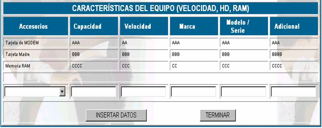

FICHAS TÉCNICAS
Las ficha técnicas se llenan para describir los recursos informáticos en términos técnicos, la pantalla principal de esta opción es la siguiente.
Donde:
N° Form; es el número de ficha técnica asignada automáticamente por el sistema.
Fecha de realización; especifica la fecha de registro de la ficha técnica.
Tipo de registro; especifica el tipo de recurso registrado.
Modelo; especifica el modelo del recurso del cual se realizó la ficha técnica.
Asignado a; especifica el nombre de la persona asignada a realizar la ficha Técnica.
Fecha de recepción; especifica la fecha de recepción del recurso, para elaborar su ficha técnica.
Nueva ficha; para crear una nueva ficha técnica se deben llenar los datos de la pantalla que aparece a continuación..
Tipo de registro;
se refiere a la clases de recursos que se está registrando, este puede ser: Computadoras de Escritorio, Servidores, Computadoras portátiles u otro.Marca;
se refiere a la marca del recursos que se está adquiriendoModelo;
se debe especificar el modelo del recurso que se está registrandoN° de Serie;
establecer el número de serie del microprocesador del recurso que se está registrando.Proveedor;
usted puede elegir un proveedor solamente de los registrados en la parte de Gestión- proveedoresRealizado por;
indicar el nombre del empleado quien está realizando el registro del recurso.Adicional USI;
en esta casilla debe poner el código de activo adicional.Fecha de Alta.
fecha en la que el equipo se puso en funcionamiento.Garantía del / al.
fecha de inicio y de final de la garantía.Presione GUARDAR Y CONTINUAR si introdujo los datos correctamente, y le parecerá la siguiente pantalla.

Accesorios
; se puede seleccionar el tipo de accesorio del cual se quiere realizar la descripciónCapacidad
; inserte la capacidad del accesorio al cual hizo referenciaVelocidad;
inserte la velocidad del accesorio, añadiendo también su medida por ejemplo Mhz.Marca;
inserte la marca o el nombre de la compañía creadora del accesorio.Modelo / Serie;
inserte el modelo y la serie del accesorio, incluyendo características.Adicional;
inserte alguna descripción adicional, o algún aspecto que no se tomó en cuenta en la descripción.Presione INSERTAR DATOS para registrar la descripción de los accesorios y TERMINAR para volver a la ficha técnica.
Fecha de devolución;
si es necesario realizar la devolución de un recurso, debido posiblemente a fallas entonces para registrar esta transacción haga click en DEVOLUCIÓN y presione GUARDAR para registrar la devolución.Modificar ficha; para realizar la modificación de una ficha haga click en
MODIFICAR y le aparecerá el formulario original de llenado, donde usted podrá cambiar sus datos y sus especificaciones de accesorios.Mantenimiento fuera; a veces es necesario realizar el mantenimiento de un recurso informático fuera de las instalaciones de la empresa, para realizar esta transacción haga click en
REALIZAR y llene la siguiente pantalla.Nro Codigo adicional USI;
usted puede escoger entre los códigos USI que asignó anteriormente en el momento del registro de la ficha técnica.Descripción;
realice una descripción detallada especificando porque se realiza el mantenimiento fuera de la empresa.Fecha de salida;
especifique en que día salió el recurso de la empresa.Fecha de retorno;
especifique también el día que tiene que volver el recurso a la empresa.Funcionario responsable;
anote el nombre de la persona que se hará cargo de cualquier situación que pueda ocurrir con el recurso.Observación;
anote las observaciones que usted considere pertinentes, especialmente si los días que el recursos son muchos.Empresa;
usted puede escoger la empresa solamente un nombre de algún proveedor registrado.Responsable de la empresa;
anote el nombre del responsable de la empresa de mantenimiento sobre la cual se realizará la transacción.Presione AÑADIR una vez llenados estos datos
Cronograma; como lo establece el manual de procedimientos de la empresa se debe realizar el mantenimiento de los equipos de forma planificada, entonces para este propósito presione
REALIZAR y le aparecerá la siguiente pantalla
Codigo;
escoja el código USI del recurso al cual se dará mantenimientoEstado;
como se está realizando la planificación en la fecha del sistema aparece Planificado, en el momento de la planificación, luego será realizado en el momento de la fecha prevista.Del – al;
se coloca las fechas de inicio y finalización del mantenimiento.Vista de impresión;
usted podrá obtener un reporte de la ficha técnica con todos sus detalles haciendo click en Ficha 1.